정보통신기사(구) (2013-03-10 기출문제)
1과목: 디지털 전자회로
1. 1.0진 BCD코드를 LED 출력으로 표시하려면 어떤 디코더 드라이브가 필요한가?
- BCD-10세그먼트
- Octal-10세그먼트
- BCD-7세그먼트
- Octal-7세그먼트
(정답률: 89%)

2. 그림과 같은 논리 회로는?
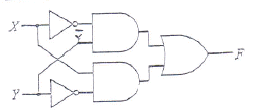
- XOR
- XNOR
- AND
- OR
(정답률: 78%)
3. 다음 중 병렬 클리핑 회로에서 클리핑 특성을 좋게 하기 위하여 사용되는 저항R의 조건으로 옳은 것은? (단, Rd는 다이오드의 순방향 저항이다.)
- R=Rd
- R=1/Rd
- R
- R>>Rd
(정답률: 77%)
4. 일정시간 동안 200개의 비트가 전송되고, 전송된 비트 중 15개의 비트에 오류가 발생하면 비트 에러율(BER)은?
- 7.5[%]
- 15[%]
- 30[%]
- 40.5[%]
(정답률: 86%)
5. 수정발진기는 임피던스가 어떤 조건일 때 가장 안정된 발진을 하는가?
- 저항성
- 용량성
- 유도성
- 유도성과 용량성 결합
(정답률: 68%)
6. 아래의 괄호 안에 들어갈 알맞은 답을 앞에서부터 순서에 맞게 나열한 것은?
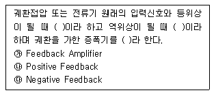
- ㉮㉯㉰
- ㉯㉰㉮
- ㉰㉮㉯
- ㉰㉯㉮
(정답률: 87%)
7. 다음 그림의 회로 명칭은?
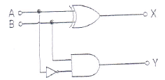
- 가산기
- 감산기
- 반감산기
- 비교기
(정답률: 71%)
8. JK Flip-Flop 에서 현재 상태의 출력 Qn을 1로 하고, J 입력과 K입력이 1 일 때 출력 펄스 CP에 신호기 인가되면 다음 상태의 출력 Qn+1은? (단, 플립플롭의 setup time과 holding time은 만족하다고 가정함.)
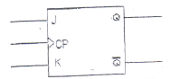
- 부정
- 1
- 0
- Qn
(정답률: 68%)
9. 다음 회로에서 제너다이오드의 특성으로 옳은 것은? (단, Vs는 제너다이오드의 동작을 위한 정격전압보다 크다.)
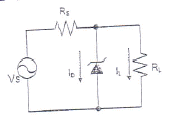
- 일정한 신호를 증폭시킨다.
- 사용하기 적당한 교류전압으로 변환한다.
- 리플 성분을 제거시킨다.
- 일정한 직류 출력전압을 제공한다.
(정답률: 65%)
10. 다음 중 슬라이서 회로에 대한 설명으로 옳은 것은?
- 입력전압이 어느 기준 레벨 이하일 때 출력을 증강시키는 회로
- 입력이 어느 레벨 이상이 될 때 깎아내어 레벨을 낮추는 회로
- 입력 파형을 일정 레벨로 고정시키는 회로
- 서로 반대 방향으로 바이어스된 클리퍼를 연속 연결한 회로
(정답률: 55%)
11. 다음 중 특정 비트의 값을 무조건 0으로 바꾸는 연산은?
- XOR 연산
- 선택적-세트(selective-set) 연산
- 선택적-보스(selective-complement) 연산
- 마스크(mask) 연산
(정답률: 87%)
12. 간접 FM변조방식(Armstrong방식)에서의 필수 요소가 아닌 것은?
- 가산기(adder)
- 평형 변조기(balanced modulation)
- 위상천이기(90° phase shifter)
- 진폭제한기(limiter)
(정답률: 69%)
13. 다음 그림은 수정진동자의 등가회로를 나타내었다. 수정진동자의 직렬 공진주파수는?
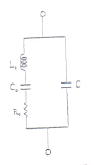
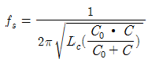
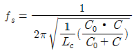
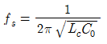
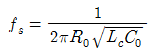
(정답률: 70%)
14. 다음의 진리표에 해당하는 논리회로도는?
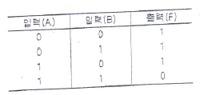
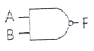
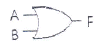
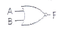
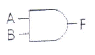
(정답률: 79%)
15. 이상적인 A급 증폭기의 최대효율은?
- 18[%]
- 35[%]
- 50[%]
- 100[%]
(정답률: 76%)
16. 다음 중 틀린 것은?
- A+B=B+A
- AㆍB=BㆍA
- A+0=0
- Aㆍ1=A
(정답률: 85%)
17. 전파 증간탭 정류기를 이용한 전파정류회로에서 맥동률에 대한 설명으로 옳지 않은 것은?
- 주파수에 비례한다.
- 부하저항에 반비례한다.
- 콘덴서 C의 정전용량에 반비례한다.
- 부하저항과 정전용량의 곱에 반비례한다.
(정답률: 61%)
18. 다음 그림과 같은 회로의 입력에 계단 전압(step voltage)을 인가할 때 출력에는 어떤 파형의 전압이 나타나겠는가? (단, A는 이상적인 연산 증폭기이다.)
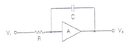
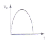
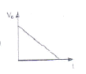
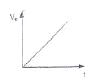
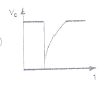
(정답률: 75%)
19. 무부하시의 직류 출력 전압이 300[V]이고, 전부하시 직류 출력전압이 250[V]였다면 전압 변동률은?
- 10[%]
- 20[%]
- 30[%]
- 40[%]
(정답률: 80%)
20. 다음 중 증폭기에 대한 설명으로 알맞은 것은?
- 교류(AC)를 직류(DC)로 바꾸는 여러 과정 가운데 맥류를 완전한 직류로 바꾸어 준다.
- 입력의 신호변화가 출력단에 확대되어 나타난다.
- 교류 성분을 직류성분으로 변환하기 위한 전기 회로이다.
- 다이오드를 사용하여 교류 전압원의(+)또는 (-)의 반 사이클을 정류하고, 부하에 직류 전압를 흘리도록 한다.
(정답률: 83%)
2과목: 정보통신 시스템
21. 통신망 관리 시스템 네트워크 내에서 소통되는 호의 상황, 설비 상황이나 그의 변동상황을 파악ㆍ관리하며 네트워크의 설비 설계, 폭주관리 설비 소통관리 등의 역할을 갖는 시스템은?
- 가입자 시설 집중 운용 분산 시스템(subscriber line maintenance and operation system)
- 장거리 회선 감시 제어 및 운용 관리 시스템
- 트래픽 집중 관리 시스템(centralized traffic management system)
- 네트워크 트래픽 시스템(network traffic system)
(정답률: 78%)
22. 다음 중 정보통신 시스템 설계의 진행과정에서 가장 나중에 수향해야 하는 것은?
- 실시설계
- 조사분석
- 기본설계
- 계획설계
(정답률: 83%)
23. 다음은 암호화에 사용되는 기술의 특징을 설명한 것이다. 무엇에 대한 설명인가?
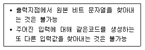
- 해쉬함수
- IPSec
- 공개키 암호화
- 대칭키 암호화
(정답률: 84%)
24. 정보통신 시스템은 크게 데이터 전송계와 데이터 처리계로 분리할 수 있다. 다음 중 데이터 전송계에 해당하지 않는 것은?
- 단말장치
- 통신 소프트웨어
- 데이터 전송회선
- 통신 제어장치
(정답률: 74%)
25. 통신 프로토콜의 기능에 해당하지 않는 것은?
- 표준화
- 단편화와 재합성
- 에러제어
- 동기화
(정답률: 50%)
26. 다음 중 ATM 교환기술에 대한 설명으로 적합하지 않은 것은?
- 셀이라고 하는 가변 길이의 패킷으로 분할하여 전송한다.
- 회선교환방식과 패킷교환방식의 장점을 결합한 방식이다.
- ATM의 품질기준에 따른 서비스 종류는 CBR, rt-VBR, nrt-VBR, ABR, UBR로 구분된다.
- ATM 트래픽 파라미터에는 PCR, SCR, MCR, MBS, CDVT 등이 있다.
(정답률: 59%)
27. 다음 중 LAN(Local Area Network)의 특성이 아닌 것은?
- 고속 통신이 가능하다.
- 구성 및 연결, 사용 방법이 복잡하다.
- 패킷 지연이 최소화된다.
- 네트워크 유지, 보수, 운용이 용이하다.
(정답률: 83%)
28. 보안의 중요성이 점차 증가하고 있다. 다음 중 보안 문제가 심각해지는 원인이 아닌 것은?
- 개방형 네트워크
- 폐쇄형 네트워크
- 인터넷의 확산
- 전자상거래 등 각종 응용서비스의 출현
(정답률: 88%)
29. HDLC 프로토클에서 S-프레임의 명령어와 거리가 먼 것은?
- Receive Reagy(RR)
- Request Disconnect(RD)
- Reject(REJ)
- Selective-Reject(SREJ)
(정답률: 74%)
30. 이동통신망에서 착ㆍ발신되는 신호 처리, 기지국 감시 및 제어, 위치 등록의 기능을 수행하는 구성 요소는?
- 이동통신 교환기
- 휴대용 단말기
- BSC
- HLR/AC
(정답률: 61%)
31. OSI 7계층의 각 계층별 기능 중 종점간의 오류수정과 흐름제어를 수행하여 신뢰성 있고 투명한 데이터 전송을 제공하는 계층은?
- 데이터링크계층
- 네트워크계층
- 트랜스포트계층
- 세션계층
(정답률: 67%)
32. IPv4의 C 클래스 네트워크를 26개의 서브넷으로 나누고, 각 서브넷에는 4~5개의 호스트를 연결하려고 한다. 이러한 서브넷을 구성하기 위한 서브넷 마스크 값은?
- 255.255.255.192
- 255.255.255.224
- 255.255.255.240
- 255.255.255.248
(정답률: 65%)
33. FM 피변조파의 최대 주파수 편이가 60[kHz], 최대 변조 신호 주파수기 15[kHz]일 때 FM 변조지수는 얼마인가?
- 3
- 4
- 5
- 6
(정답률: 85%)
34. 근거리 통신망에 접속된 PC를 통해 인터넷 접속을 하기 위해서 PC에 구성되어야 할 프로토클 구조는 무엇인가? (MAC : Medium Access Control)
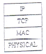
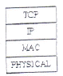
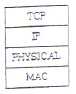
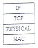
(정답률: 82%)
35. 제4세대 이동통신 서비스에 가장 가까운 서비스는?
- Wibro
- WiFi
- LTE
- Bluetooth
(정답률: 88%)
36. 통신망의 구성 형태 중 성형(star type) 망의 장점이 아닌 것은?
- 전송 제어 기능이 간단하다.
- 각 터미널마다 전송속도를 다르게 설정할 수 있다.
- 제어용 컴퓨터가 필요 없다.
- 집중 제어형이므로 보수와 관리가 용이하다.
(정답률: 76%)
37. V.32, V.42, X.25등의 표준을 제정한 표준화 기구는 어디인가?
- IEEE
- ANSI
- ISO
- ITU-T
(정답률: 70%)
38. IP 주소와 같은 숫자로 되어 있는 주소정보를 문자열 정보로 변환하여 관리하는 서버이며, 주로 인터넷에서 사용하는 것은?
- SMTP(Simple Message Transfer Protocol)
- DNS(Domain Name Server)
- POP(Post Office Protocol)
- TCP(Transmission Control Protocol)
(정답률: 74%)
39. 다음 중 광대역통합망(BcN, Broadband Convergence Network)의 특성에 대한 설명으로 옳지 않은 것은?
- 음성, 데이터, 유무선, 통신, 방송 융합형 서비스를 언제 어디서나 편리하게 이용할 수 있는 서비스통합망
- 다야항 서비스를 용이하게 개발해 제공할 수 있는 개방형 플랫폼(Open API)기반의 통신망
- 보안(Security), 품질보장(QoS), IPv6가 지원되는 통신망
- 특정 네트워크 및 단말을 사용하여 다양한 서비스를 끊어짐 없이 이용할 수 있는 유비쿼터스 환경을 지원하는 통신망
(정답률: 60%)
40. 다음 중 TCP 프레임의 헤더 구조를 설명한 것으로 틀린 것은?
- 순차 번호(Sequence Number) 필드는 승신 TCP로부터 수신 TCP로 송신되는 데이터 스트림 중 마지막 바이트를 지정한다.
- 응답 번호(Acknowledgement Number)는 응답제어 비트가 설정되어 있을 때만 제공된다.
- Data Offset는 TCP 헤더에서 32비트 워드의 숫자를 특성화시킨다.
- Window는 수신부가 응답필드에서 지정한 번호부터 수신할 수 있는 바이트의 수를 표시한다.
(정답률: 69%)
3과목: 정보통신 기기
41. 문자나 그림으로 구성된 화상 정보가 축적되어 있는 데이터베이스로 부터 TV 수상기와 전화회선을 이용하여 사용자가 원하는 각종 정보검색 시스템을 제공하는 것은?
- 쌍방향 CATV
- VRS(Video Response System)
- 팩시밀리
- 비디오텍스
(정답률: 78%)
42. 다음 중 T1급 혹은 E1급 전응선을 사용하여 네트워크를 구축할 경우 적합한 디지털 전송장비는?
- CSU
- MODEM
- CCU
- CODEC
(정답률: 72%)
43. CATV 시스템의 기존구성에서 안테나로부터의 수신된 방송신호의 출력 레벨을 조정하여 전송망으로 보내는 것은?
- 탭오프(Tap-off)
- 간선 증폭기
- 분기 증폭기
- 해드엔드(Head-end)
(정답률: 82%)
44. 다음 중 CDMA(IS-95A방식기준)망에서 BTS(Bass Transceiver Station)에서 수행하는 과정이 아닌 것은?
- 콘볼루션인코딩
- 심블반족
- 블록인터리빙
- CRC
(정답률: 73%)
45. 다음 중 LAN 장비에서 네트워크계층의 연결장비인 것은?
- Router
- Bridge
- Repeater
- Hub
(정답률: 84%)
46. DOCSIS(Data Over Cable Service Interface Specifications)라는 표준 인터페이스를 활용하는 단말은?
- 케이블 모뎀
- 휴대폰
- 스마트 패드
- 유선 일반전화기
(정답률: 85%)
47. 다음 중 라우터의 이더넷(Ethernet) 인터페이스인 접속 포트에 활용되지 않는 것은?
- TP
- AUI
- DVI
- MAU
(정답률: 79%)
48. 다음 중 디지털 지상파 TV방송의 전송방식이 아닌 것은?
- ATSC
- DVB-H
- ISDB-T
- DMB-T/H
(정답률: 77%)
49. 다음 중 메시지 전송서비스에 해당하지 않는 것은?
- 통보 전송
- 발신 메시지 정보
- 우선도 지정
- 비밀도 표시
(정답률: 78%)
50. 등기식 광전송시스템에 대한 설명으로 적합하지 않은 것은?
- STM-1 신호를 기본신호 단위로 하여 그 배수로서 고계위 신호인 STM-n신호를 형성하는 장비이다.
- 간단히 다중처리가 가능하므로 경제적인 시스템을 구성할 수 있다.
- PDH처럼 단계적인 다중방식을 사용함으로 중간단계 다중화에서 오버헤드가 불필요하다.
- 기준의 모든 통신망 통합이 가능하여 장거리 통신이 가능하고 단일 표준의 망구성을 할 수 있다.
(정답률: 63%)
51. 다음 중 정보 단말기의 일반적인 분류에서 인식장치가 아닌 것은?
- 광학문자판독기(OCR)
- 광학마크판독기(OMR)
- MICR(Magnetic Ink Character Reader)
- 라인프린터(Line Printer)
(정답률: 85%)
52. 단순한 전송 기능 이상으로 정보의 축척, 가공, 변환 처리 등의 부가가치를 부여한 음성 또는 데이터 정보를 제공해 주는 복합적인 정보서비스망은?
- DSU
- VAN
- LAN
- MHS
(정답률: 82%)
53. 등방성 안테나로부터 거리가 2,000[m] 떨어져 있는 점의 전계강도는 약 얼마인가? (단, 안테나로부터 방사되는 전력은 10[W]이다.)
- 8.66[mV/m]
- 0.866[mV/m]
- 1.866[mV/m]
- 0.186[mV/m]
(정답률: 60%)
54. CDMA시스템의 이론적인 주파수 재사용률(FRT : Frequency Reuse Pattern)은 얼마인가?
- 1
- 2
- 3
- 4
(정답률: 71%)
55. 정보통신시스템 소프트웨어에서 운영체제의 기능이 아닌 것은?
- 감독기능
- 잡(job)관리기능
- 범용라이브러리 기능
- 통신제어기능
(정답률: 74%)
56. 저궤도 위성통신 시스템의 일반적인 특징이 아닌 것은?
- 정지위성에 비해 많은 수의 위성이 필요하다.
- 동일한 궤도에서도 여러 개의 위성이 필요하다.
- 정지위성에 비해 저궤도 위성의 수명이 매우 길다.
- 다중 빔 방식으로 주파수를 효율적으로 사용한다.
(정답률: 81%)
57. 다음 중 팩시밀리(Facsimile) 장치의 기본적인 상수가 아닌 것은?
- 주사선 길이
- 주사선 밀도
- 전송 시간
- 최소화 주파수
(정답률: 68%)
58. 다음 중 영상통신에서 지원하는 H.264에 대한 설명으로 맞지 않는 것은?
- 데이터는 직사각형 비디오 프레임을 지원한다.
- 움직임 보상의 최소 블록 크기는 4×4이다.
- 움직임 벡터(추정 및 보상)의 정확도는 1/4화소로 지원한다.
- 디코더 내부의 디블록킹 필터는 사용하지 않는다.
(정답률: 78%)
59. HDTV 방식에서 1채널의 대역폭은?
- 6[MHz]
- 9[MHz]
- 18[MHz]
- 27[MHz]
(정답률: 80%)
60. 다음 중 집중화 방식의 특징이 아닌 것은?
- 송수신 할 데이터가 없어도 타임슬롯을 할당한다.
- 채널을 효율적으로 사용할 수 있다.
- 단말기의 속도, 터미널의 접속 개수 등을 자유롭게 변경할 수 있다.
- 패킷교환 집중화 방식과 회선교환 집중화 방식이 있다.
(정답률: 67%)
4과목: 정보전송 공학
61. Mobile IP 서비스에서 사용되는 바인딩(binding)에 대한 설명으로 옳은 것은?
- HA(Home Agent)가 MN(Mobile Node)에게 데이터를 보내기 위해 터널을 연결하는 것
- COA(Care Of Address)와 MN(Mobile Node)의 홈 주소를 연결시키는 것
- HA(Home Agemt)와 FN(Foreign Agent)가 자신이 어느 링크에 접속되어 있는지를 광고로 알리는 것
- FA(Foreign Agent)가 MN(Mobile Node)과 다른 MN(Mobile Node)을 연결시키는 것
(정답률: 73%)
62. 다음 중 DPSK에 대한 설명으로 틀린 것은?
- 전력제한을 받는 시스템에서는 거의 사용하지 않는다.
- DPSK송신기의 논리회로에는 배타적 OR가 사용된다.
- DPSK수신기 내에는 위상 비교기, 지연회로, BPF가 있다.
- PSK의 일증으로 등기검파를 수행한다.
(정답률: 59%)
63. 문자등기방식에서 에러를 체크하기 위한 코드는?
- ETX(End of Text)
- STX(Start og Text)
- BCC(Block Chek Character)
- BSC(Binary Synchronous Control)
(정답률: 80%)
64. 다음 중 UDP에 대한 설명으로 틀린 것은?
- 신뢰성을 제공하지 않는다.
- 연결설정 없이 데이터를 전송한다.
- 연결 등에 대한 상태 정보를 저장하지 않는다.
- TCP에 비하여 오버헤드의 크기가 크다.
(정답률: 82%)
65. 빛을 집광하는 능력 즉, 최대 수광각 범위 내로 입사시키기 위한 광학렌즈의 척도를 무엇이라 하는가?
- 개구수(Numerical Aperture. NA)
- 조리개 값(F-number)
- 분해거리(Resolved Distance)
- 초점심도(Depth of Focus)
(정답률: 80%)
66. 프로토클의 기능 중 송신측 개체로부터 오는 데이터의 양이나 속도를 수신측 개체에서 조절하는 기능은 무엇인가?
- 연결제어
- 에러제어
- 흐름제어
- 등기제어
(정답률: 83%)
67. 이동통신에서 특정 셀내에서 최번시(Busy hour) 1시간 동안 2,000개 호가 발생하고, 호당 평균 보류시간(Holding time)이 100초인 경우, 호손을(Blocking probability) PB=2[%]를 적용하면, 해당 셀에서 필요한 채널 수는 어떻게 되는가? (단, 해당 셀의 최번시(BH)등안 층 트래픽 : 55.6[Erl] =2,000개 호×100초/3,600초)
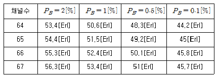
- 64
- 65
- 66
- 67
(정답률: 58%)
68. 다음 중 동기식 전송의 특징으로 적합하지 않은 것은?
- 각 문자의 앞에는 시작비트 뒤에는 종료비트를 갖는다.
- 블록과 블록 사이에는 휴지간격이 없다.
- 정보전송 형태는 블록단위로 이루어진다.
- 수신측 단말에는 버퍼 기억장치를 가지고 있어야 한다.
(정답률: 73%)
69. 다음 중 전송 오류 제어에서 Stop-and-wait ARQ 방식의 설명으로 틀린 것은?
- ARQ 방식 중 가장 간단하다.
- 전파 지연이 긴 시스템에 효과적이다.
- 오류 검출이 뛰어나다.
- 메모리 Buffer 용량은 큰 블록 데이터를 저장할 수 있어야 한다.
(정답률: 68%)
70. 8진 PSK 신호에 5,000[Hz]의 대역폭이 주어졌을 때 보오율(baud rate)과 비트율(bit rate)은 각각 얼마인가?
- 보오율: 5,000[baud/s], 비트율: 15,000[bps]
- 보오율: 5,000[baud/s], 비트율: 20,000[bps]
- 보오율: 10,000[baud/s], 비트율: 15,000[bps]
- 보오율: 10,000[baud/s], 비트율: 20,000[bps]
(정답률: 78%)
71. 다음의 손실 중 동축케이블에 나타나는 손실은?
- 적외선 흡수 손실
- 레일리 산란 손실
- 와류 손실
- 구조 불완전 손실
(정답률: 81%)
72. 다음 중 IPv4와 IPv6의 연동 방법으로 틀린 것은?
- 이중 스택(Dual Stack)
- 터널링(Tunneling)
- IPv4./IPv6 변환(Translation)
- 라우팅(Routing)
(정답률: 72%)
73. 표본화 정리에 의하면 주파수 대역이 60[Hz]~3.6[kHz]인 신호를 완전히 복원하기 위한 표본화 주기는?
- 1/60초
- 1/3.6초
- 1/7,200초
- 1/6,800초
(정답률: 83%)
74. 다음 중 IP주소에 대한 설명으로 옳은 것은?
- A클래스
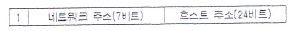
- B클래스
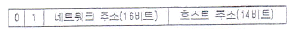
- C클래스
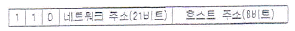
- D클래스
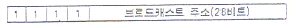
(정답률: 77%)
75. 다음 중 서브넷 마스크(Subnet Mask)에 대한 설명으로 옳지 않은 것은?
- 서브넷 마스크는 라우터에서 서브넷 식별자를 구별하기 위해서 필요한 것이다.
- 서브넷 마스크는 IP주소와 마찬가지로 32비트로 이루어져 있다.
- 서브넷 마스크의 비트열이 1인 경우 해당 IP주소의 비트열은 네트워크 주소 부분으로 간주된다.
- 서브넷 마스크를 적용하는 방법은 목적지 IP주소의 비트열에 서브넷 마스크 비트열을 OR 논리를 적용한다.
(정답률: 74%)
76. 물리계층 4대 특성 중 DTE와 DCE간의 신호의 전압레벨, 상승시간, 하강시간, 잡음이득을 규정한 것은?
- 기계적 특성
- 전기적 특성
- 기능적 특성
- 절차적 특성
(정답률: 79%)
77. 데이터 통신방식 중 Full-Duplex 방식의 가장 큰 장점은?
- 비등기식 전송방식에 적합하다.
- 데이털를 동시에 전송하지 않는다.
- 동시에 송수신이 가능하다.
- 데이터를 병렬로 보낼 수 있다.
(정답률: 82%)
78. 등기방식 중 클럭(CLOCK)을 사용하여 등기를 맞추는 방식은?
- 문자등기
- 비트등기
- 플래그동기
- 제어동기
(정답률: 62%)
79. 전송로 구조 분산(도파로 분산)에 대한 설명으로 틀린 것은?
- 광섬유의 구조에 변화가 생겨 빛과 광케이블이 이루는 각이 파장에 따라 변해서 발생
- 실제 전송로의 경로의 길이에 변화가 발생하게 되고 도착 시간의 차이가 발생
- 광 펄스가 옆으로 퍼지는 현상
- 모드 사이의 전달되는 전파속도 차이 때문에 발생하는 분산
(정답률: 62%)
80. 시분할 다중화 방식에서 채널간의 상호간섭을 방지하기 위하여 사용되는 시간 간격을 무엇이라 하는가?
- 가드 밴드(guard band)
- 버퍼(buffer)
- 가드 타임(guard time)
- 부호화 타임(coding time)
(정답률: 77%)
5과목: 전자계산기일반 및 정보통신설비기준
81. CPU가 어떤 프로그램을 순차적으로 수행하는 도중에 외부로부터 인터럽트 요구가 들어오면, 원래의 프로그램을 중단하고, 인터럽트를 위한 프로그램을 먼저 수행하게 되는데 이와 같은 프로그램을 무엇이라 하는가?
- 명령 실행 사이클
- 인터럽트 서비스 루틴
- 인터럽트 사이클
- 인터럽트 플래그
(정답률: 78%)
82. 다음 중 그레이 코드 10110110을 2진수를 변환한 것으로 맞는 것은?
- 11011011
- 10101101
- 01001100
- 01101011
(정답률: 71%)
83. 다음 괄호 안에 들어갈 알맞은 것은?
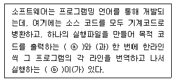
- ⓐ 컴파일러 ⓑ 인터프리터
- ⓐ 인터프리터 ⓑ 컴파일러
- ⓐ 어셈블리어 ⓑ 컴파일러
- ⓐ 인터프리터 ⓑ 어셈블리어
(정답률: 67%)
84. 순차탐색(sequenlial search)에서 n개의 자료에 대해 평균 키 비교 횟수는 얼마인가?
- n/2
- n
- (n+1)/2
- n+1
(정답률: 59%)
85. 운영체제에서 컴퓨터 시스템 내의 물리적인 CPU, 메모리, 입출력 장치 등과 논리적 자원인 파일들이 효율적으로 고유의 기능을 수행하도록 관리가 제어하는 부분은 다음 중 무엇인가?
- 메모리
- GUI
- 커널
- 1/O
(정답률: 66%)
86. 프로그램에서 함수들을 호출하였을 때 복귀주소(return address)들을 보관하는데 사용하는 자료구조는 어느 것인가?
- 스택(stack)
- 큐(queue)
- 트리(tree)
- 그래프(graph)
(정답률: 75%)
87. 주소 지정방식 중 명령어 내에 오퍼랜드 필드의 내용이 데이터의 유효주소가 되는 주소지정방식은?
- 직접 주소지정방식
- 간접 주소지정방식
- 레지스터 주소지정방식
- 레지스터 간접 주소지정방식
(정답률: 56%)
88. 길이(depth)가 4인 전 이진트리(full binary tree)를 배열로 표현하고자 한다. 배열의 시작 색인(index)이 0으로 ㅣ작된다면 마지막 색인의 값은 얼마인가?
- 13
- 14
- 15
- 16
(정답률: 58%)
89. 다음 중 자바(java) 언어의 특징으로 옳지 않은 것은?
- 객체지향언어의 장점을 가지고 있다.
- 컴파일러 언어이다.
- 분산환경에 알맞은 네트워크 언어이다.
- 플랫폼에 무관한 이식이 가능한 언어이다.
(정답률: 59%)
90. 마이크로컴퓨터의 기본 정보는 ‘0’과 ‘1’로만 표현되며, 이러한 부호의 조합을 명령(instruction)이라고 한다. 그리고 명령들은 어떤 육적과 규칙에 따라 나열되고, 메모리에 저장되는데 이것을 무엇이라 하는가?
- 데이터(DATA)
- 소프트웨어(Software)
- 신호(Signal)
- 2진 코드
(정답률: 62%)
91. 전기통신기본법에 따라 전기통신설비에 사용하는 장치ㆍ기기ㆍ부품 또는 선조 등을 무엇이라고 하는가?
- 전기통신기자재
- 전기통신회선설비
- 전기통신선로설비
- 전기통신설비재료
(정답률: 73%)
92. 다음의 방송통신관련 설비 중 접지를 하지 않아도 되는 것은?
- 전도성이 있는 인장선을 사용하는 전력선 반송케이블
- 금속성 함ㅊ[로 내부에 전기적 접속을 하는 경우
- 광섬유케이블로 전도성이 없는 인장선을 사용하는 경우
- 중계기에 전원 공급을 병행하는 케이블 방송용 동축케이블
(정답률: 78%)
93. 다음 중 정보통신공사업의 영업정지가 아닌 등록이 취소되는 경우는?
- 정보통신기술자를 공사현장에 배치하지 아니한 경우
- 상호, 명칭을 변경한 경우에 거짓으로 신고한 경우
- 부정한 방법으로 정보통신공사업을 등록을 한 경우
- 하도급항 수 있는 공사 범위를 넘어 하도급한 경우
(정답률: 82%)
94. 방송통신설비의 설치 및 보전은 무엇에 따라 하여야 하는가?
- 설계도서
- 프로토클
- 전기통신기술기준
- 정보통신공사업법
(정답률: 71%)
95. 발주자는 누구에게 공사의 감리를 발주하여야 하는가?
- 감리원
- 정보통신기술자
- 용역업자
- 도급업자
(정답률: 73%)
96. 다음 중 정보통신공사의 감리원의 업무 범위에 대한 것이 아닌 것은?
- 하도급에 대한 타당성 검토
- 공사 자재의 조달에 대한 감사
- 준공도서의 검토 및 준공확인
- 공사계획 및 공정표의 검토
(정답률: 55%)
97. 전기도체, 절연물로 싼 전기도체 또는 절연물로 싼 것의 위를 보호피막으로 보호한 전기도체 등으로서 300볼트 이상의 전력을 송전하거나 배전하는 전선을 무엇이라 하는가?
- 전력선
- 통신선
- 통신케이블
- 강전류전선
(정답률: 78%)
98. 다음 중 정부에서 정보통신망을 효율적으로 활용하기 위해 권장하는 사항이 아닌 것은?
- 정보통신망 상호간의 연계 운영
- 정보통신망의 경영 관리
- 정보통신망의 표준화
- 정보의 공동 활용 체제 구축
(정답률: 68%)
99. 다음 중 정보통신공사업법에 따른 정보설비공사의 종류에 해당하지 않는 것은?
- 정보망설비공사
- 전송설비공사
- 철도통신ㆍ신호설비공사
- 정보매체설비공사
(정답률: 55%)
100. 다음 중 전기통신사업법에서 정하는 용어의 정의로 옳지 않은 것은?
- “자가전기통신설비”란 사업용전기통신설비 외의 것으로서 특정인인 타인의 전기통시네 이용하기 위하여 설치한 전기통시설비를 말한다.
- “전기통신사업자”란 허가를 받거나 등록 또는 신고를 하고 전기통신 역무를 제공하는 자를 말한다.
- “사업용전기통신설비”란 전기통시사업에 제공하기 위한 전기통신 설비를 말한다.
- “전기통신설비”란 전기통신을 하기 위한 기계ㆍ기구ㆍ선로 또는 그 밖에 전기통신에 필요한 설비를 말한다.
(정답률: 74%)